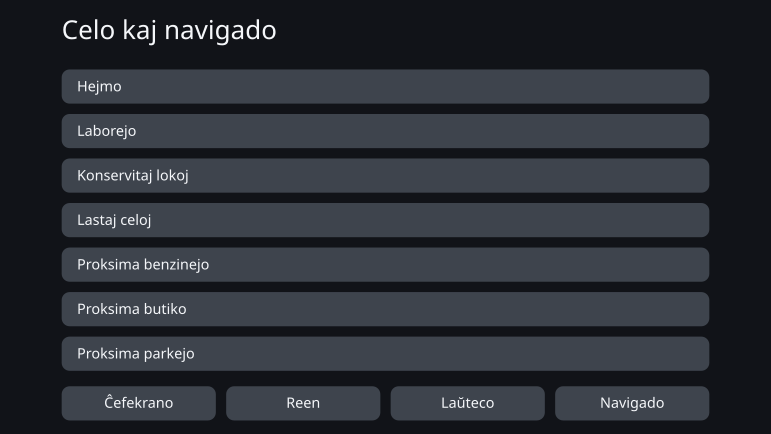
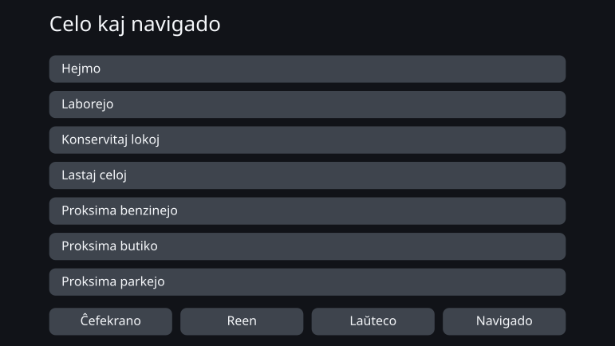

Personal Fit UI - Individua optimumigo de UI per dezajno laŭ limigoj
aŭgusto 2026
Superrigardo
Ĉiuj uzas la saman interfacon en la sama maniero. Ĉi tiu verko forlasas tiun premison de amasproduktado kaj demandas, ĉu eblas anstataŭe generi interfacon, kiu kongruas kun la kognaj, sensaj kaj korpaj trajtoj de ĉiu unuopa homo.
La celo ne estis interfaco, kies ekrano senĉese ŝanĝiĝas laŭ la situacio dum la uzado. Temas pri mekanismo, kiu kaptas la trajtojn de la homo je la komenco de la uzado kaj anticipe generas al li konvenan interfacon, respektante la limigojn pri sekureco kaj alirebleco.
En ĉi tiu esploro mi praktikis ideon, kiun mi nomas dezajno laŭ limigoj. Surbaze de literaturo kaj normoj, la homo dezajnas la direktojn sekvindajn kaj la limojn ne transpaŝeblajn. Ene de tiu kadro la artefarita inteligenteco decidas la konkretajn valorojn kaj vortumojn, kaj la generitaĵo estas kontrolata, ĉu ĝi ne malobeas la kadron.
La provo de koncepto prenis aŭtomobilan navigilon kiel temon kaj generis interfacon por dek tri person-modeloj kun malsamaj trajtoj. Rezulte, granda ŝanĝo en la aspekto preskaŭ ne aperis. Aliflanke, la procezo de surpaperigo de la limigoj en kontrolebla formo montris, kie restas spaco por individuigo kaj kie la limigoj ĝin formanĝas.
Kion signifas doni al ĉiuj la saman interfacon
Plej multaj produktoj hodiaŭ estas dezajnitaj sub la premiso de amasproduktado: unu interfaco, kiu kovru kiel eble plej multajn homojn. Eĉ kiam la litergrandeco aŭ la nombro de montrataj eroj estas ŝanĝeblaj, la uzanto mem devas trovi la al si konvenan staton kaj agordi ĝin.
Tiu maniero funkcias por multaj homoj. Sed „konveni al multaj“ kaj „konveni al ĉiuj“ ne estas la samo. Eĉ produkto, kiu plenumas ĉiujn komunajn dezajnajn normojn, lasas homojn, al kiuj tiu interfaco restas malfacile uzebla.
La sama strukturo aperas ankaŭ en la takso de enaŭtaj interfacoj. La akcepta proceduro de la usona NHTSA pri forturno de la rigardo dum stirado ne postulas, ke ĉiuj partoprenantoj plenumu la kriterion. Tasko estas konsiderata sukcesa, kiam 21 el 24 partoprenantoj ĝin plenumas: ke iu parto ne plenumas ĝin, estas anticipe enskribita en la proceduron mem. Krome, dokumento prezentita al la reguliganto de aŭtofabrikantoj raportas, ke ĉirkaŭ unu homo el ses konstante forturnas la rigardon pli longe tra pluraj taskoj. Tiu dokumento devenas de la fabrikantoj mem, kiujn la reguligo koncernas, kaj petis malstreĉon de la kriterio. Kion ĉi tiu verko celas, ne estas malstreĉi la kriterion, sed pliigi per individuigo la nombron de homoj kapablaj ĝin plenumi.
La senco de individuigita interfaco ne estas fari la ekranon de ĉiuj nova kaj neordinara. Ĝi estas enkonduki la homojn, kiujn la unueca interfaco ĝis nun perdis, en la amplekson, kie ili povas ĝin uzi kaj sekure manipuli.
Ĝis nun la kosto dezajni unu interfacon por unu homo ne estis realisma. De kiam la artefarita inteligenteco uzeblas kiel parto de la dezajna procezo, tiu premiso komencas ŝanĝiĝi.
Aŭtomobila navigilo kiel temo
La temo de ĉi tiu verko ne estas la aŭtomobila navigilo, sed la individuigita interfaco. La navigilo estis elektita kiel unu ekzemplo, sur kiu kontroli ĝiajn eblojn kaj ĝiajn limojn.
Enaŭta interfaco portas fortajn limigojn: malvasta ekrano, tre mallonga rigarda tempo, sekureco de ĉiu manipulo. Antaŭ la ekspedo ĝi estas validigita kiel unueca interfaco uzebla de plej multaj homoj — kaj la sama interfaco poste transdoniĝas ankaŭ al tiuj, al kiuj tiu dezajno ne konvenas.
Se individuigo tenas en kampo tiel strikte limigita, la ideon de dezajno laŭ limigoj eblas kontroli konkrete. Inverse, eblas ankaŭ, ke la limigoj lasas al la artefarita inteligenteco preskaŭ neniom da libereco. Tio estis temo, ĉe kiu ambaŭ observeblas.
En Japanio, en 2026, kunekzistas modeloj kapablaj je ĝisdatigo tra la aero kaj tradiciaj fabrike instalitaj navigiloj, kiuj ĝisdatigon ne akceptas. Krome, eĉ kie la mapaj datumoj ĝisdatigeblas, la baza strukturo de la interfaco ne nepre estas re-dezajnata denove kaj denove post la aĉeto. Ĉi tiu provo de koncepto supozas sistemon, kies interfaco ne estas ofte ĝisdatigata post la komenco de la uzado.
Fari individuigon io, kion oni povas generi
Dezajno laŭ limigoj signifas klare fiksi la kadron kaj poste lasi la artefaritan inteligentecon movi sin ene de ĝi flekseble kaj kun sento por nuancoj. Malsame ol parametra mekanismo, kiu ĉerpas valorojn el fiksita tabelo, ĉi tie oni dezajnas la amplekson mem de la solvoj, kiujn la artefarita inteligenteco rajtas esplori.
Sciencaj konoj ne ĉiam atingas konkretan nombron. Foje ili indikas nur direkton: pligrandigi, montri malpli. Kie la valoro estas difinita, ĝi estas kalkulata kiel regulo; kie konata estas nur la direkto, la artefarita inteligenteco decidas la konkretaĵon ene de tio, kion la limigoj permesas. Ne lasi tiun distingon malklariĝi estas mem parto de la mekanismo.
Fiksi la kognajn dimensiojn
La aksoj estas difinitaj ne kiel diagnozaj nomoj, sed kiel trajtoj rilataj al la facileco de uzado: labormemoro, eltenemo kontraŭ distraj stimuloj, vidaj kaj aŭdaj trajtoj, fingra lerteco.
Kongrua tabelo
Ligas la trajtojn de la uzanto al la interfacaj parametroj movendaj: kiu trajto movas kion kaj en kiun direkton, kune kun la pravigo.
Sciencaj konoj kaj normoj
Kolektiĝas sekurecaj kriterioj, normoj pri alirebleco, rezultoj de la kogna scienco kaj ĝeneralaj principoj de interfaca dezajno.
Aro da limigoj
La kondiĉoj, kiujn ĉiu generitaĵo nepre respektu. Ne restante idealoj, ili estas skribitaj en formo, ĉe kiu kontroleblas: plenumita aŭ malobeita.
Dezajna spaco
Ĉio, kion la interfaco povas varii: litergrandeco, tuŝceloj, nombro de montrataj eroj, informa hierarkio, sciigoj, vortprovizo, ordo, grupigo. La kongrua tabelo donas la direkton de la agordo; la aro da limigoj forigas la nepermesatajn solvojn.
La artefarita inteligenteco konkretigas ene de la kadro
El la restanta libereco ĝi decidas valorojn, vortprovizon, ordon kaj grupigon. Aparta kontrolo konfirmas la kongruon kun la kadro, kaj eliras nur individuigita interfaco, kiu plenumas ĉiujn kondiĉojn.
Provo de koncepto: interfaco por dek tri person-modeloj
Por la provo de koncepto estis pretigitaj dek tri person-modeloj kun malsamaj kombinoj de trajtoj. Ili ne reproduktas realan distribuon de uzantoj: ili estas kradpunktoj por kontrolo, kies trajtoj estas intence lokitaj por konstati, kiu el ili ŝanĝas la interfacon.
Por ĉiu person-modelo la komuna unueca interfaco estas la before, kaj la interfaco generita el ĝiaj trajtoj estas la after.
Ekzemplo, ĉe kiu preskaŭ nenio ŝanĝiĝis
PS-01 — referenco (matura aĝo, tipa)
Tiu ĉi person-modelo troviĝas en la tipa amplekso ĉe ĉiuj kognaj, sensaj kaj korpaj trajtoj. Post la individuigo la literoj iĝis iomete pli grandaj, sed la nombro de montrataj eroj, la aranĝo kaj la grandeco de la tuŝzonoj restis preskaŭ senŝanĝaj.
Unueca interfaco (before)

Individuigita interfaco (after)

Ekzemplo, ĉe kiu la ŝanĝo videblas
PS-12 — matura aĝo, malalta fingra lerteco (sensaj kaj kognaj trajtoj tipaj)
Tiu ĉi person-modelo kongruas kun PS-01 laŭ aĝo kaj laŭ sensaj kaj kognaj trajtoj; nur la fingra lerteco estas malalta. En la after la tuŝceloj pligrandiĝis kaj la eroj montrataj sur unu ekrano malpliiĝis de sep al kvar. La ceteraj transiris al la sekva ekrano, kaj ĝuste tio certigas al ĉiu unuopa celo ĝian grandecon.
Unueca interfaco (before)

Individuigita interfaco (after)
La literaturo montras la malsupran limon, kiun tuŝcelo devas plenumi, kaj la direkton pligrandigi ĝin, kiam la precizeco de la manipulado estas malalta. Sed ĝi ne difinas unusignife, kiom aldoni ĝuste por ĉi tiu homo. Tiun nedifinitan parton la artefarita inteligenteco konkretigis ene de la limigoj.
Kion donis la provo de koncepto
Klare videbla ŝanĝo konstateblis nur ĉe PS-12, unu el dek tri. Ĉe la plimulto de la person-modeloj la unueca interfaco de la before jam funkciis sufiĉe bone; la gajno el individuigo preskaŭ ne aperis, almenaŭ en formo rekonebla laŭ la aspekto de la ekrano.
Ĉe PS-12 la individuigon eblis montri videble, sed ŝanĝo de tiu grado atingeblas ankaŭ per la montraj kaj alireblecaj agordoj de ekzistantaj produktoj. Ke la konvena stato haveblas ekde la komenco, sen ke la uzanto mem devu agordi, havas sian valoron. Tamen ne eblas diri, ke naskiĝis nova interfaco, kiun povus proponi nur artefarita inteligenteco.
Mi ne konkludis el tiu rezulto, ke individuigo per artefarita inteligenteco sukcesis.
Kial la diferenco ne aperis
La kaŭzo kuŝas en tio, ke la dezajna spaco plenumanta la limigojn estis malvasta.
Enaŭta interfaco havas multajn malsuprajn kaj suprajn limojn pro sekureco. Literoj kaj tuŝceloj bezonas certan minimuman grandecon, kaj por la informkvanto sur unu ekrano validas supra limo. Aplikante ilin unu post la alia, al la artefarita inteligenteco restis nur malmultaj solvoj elekteblaj.
Ankaŭ plej multo el tio, kion la artefarita inteligenteco konkretigis, en la nuna skalo estis tio, kion homo povus decidi unufoje kaj fiksi kiel malgrandan kongruan tabelon. Tio ne signifas, ke la artefarita inteligenteco estis superflua — ĝi plenigis konkretajn valorojn, kiujn la literaturo ne donas. Sed por esplori restis al ĝi tro malmultaj elektebloj.
Aliflanke, ĉe la reformulado de la vortprovizo restis larĝa libereco. Tamen tiu diferenco malfacile videblas kiel ŝanĝo de la ekrana konsisto: la kampo, kie la homo povis rekoni la valoron, kaj la kampo, kiun reguloj ne kapablas plene skribi, ne interkovriĝis.
La rezulto aperis en la kadro, ne en la interfaco
La plej granda rezulto de ĉi tiu provo de koncepto naskiĝis ne en la etapo de generado de interfacoj, sed antaŭe, en la etapo de dezajnado de la limigoj. Dum normoj kaj literaturo estis surpaperigataj kiel maŝine kontroleblaj kondiĉoj, en la kadro mem troviĝis pluraj malkongruoj.
- Malsamaj normoj donis malsamajn malsuprajn limojn por la sama interfaca elemento.
- La kondiĉo „validas nur dum veturado“ havis nenian lokon, kie ĝi estus skribebla en la specifo.
- Du dezajnaj aksoj, esence sendependaj, estis kunfanditaj en unu, tial la limigoj forigis preskaŭ ĉiujn elekteblojn.
- Al la artefarita inteligenteco ne estis sufiĉe klare komunikite, kiu limigo regas kiun eligon, do senrilataj kondiĉoj eniris la juĝon.
- Juĝoj, kiuj devus resti ĉe la artefarita inteligenteco, estis fiksitaj en la realigo, kio proksimigis la dezajnon laŭ limigoj al nura regul-motoro.
Pri ĉiu el ili la artefarita inteligenteco detektis la malkongruon kaj montris la koncernan lokon, homo juĝis, kaj la limigo estis korektita.
Alivorte, la rezulto de ĉi tiu verko kuŝas malpli en tio, ke artefarita inteligenteco kreis novan interfacon, ol en tio, ke per la interŝanĝo kun la artefarita inteligenteco la kadro mem, el kiu naskiĝas interfacoj, estis kontrolita kaj ĝisdatigita. La rolo de la artefarita inteligenteco en dezajno laŭ limigoj ne estas nur generi finitan produkton. Ĝi estas ankaŭ, antaŭ ol io ajn estas generita, trovi, kie reguloj interpuŝiĝas kaj kie dezajna eblo estis forviŝita sen ies intenco.
Estonta laboro — klara kadro, vasta interno
Kion oni atendas de la artefarita inteligenteco en dezajno laŭ limigoj, ne estas ĉerpi fiksitajn valorojn el tabelo. Estas per la limigoj ekskludi la evidente maltaŭgan kaj poste, el la multaj restantaj ebloj, proponi la solvon plej verŝajne trafan — aŭ montri ŝablonon, pri kiu homo antaŭe ne estus pensinta.
Ĉi-foje tiu efiko ne aperis sufiĉe. Ne pro tio, ke mankis konfliktoj, sed ĉar la dezajna spaco plenumanta la limigojn estis malvasta kaj elekti „pli taŭgan“ aŭ „novan“ solvon preskaŭ perdis sencon.
La sekva demando ne estas, ĉu artefarita inteligenteco utilas. Ĝi estas: ekde kiu vasteco de la dezajna spaco naskiĝas la efiko, kiun donas nur artefarita inteligenteco?
Por la sekva praktiko mi elektos temon, ĉe kiu la sekureco restas konservita, tamen postrestas pluraj taŭgaj solvoj, kaj la diferencoj neskribeblaj per reguloj estas rekoneblaj kiel valoro ankaŭ de homoj. La kadro estas difinita klare. Sed interne restas tiom da vasteco, ke la artefarita inteligenteco povas esplori. Tiu kunekzisto faras el dezajno laŭ limigoj ne nuran aŭtomatigon, sed dezajnan metodon por la epoko de artefarita inteligenteco.